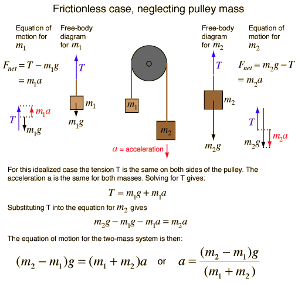
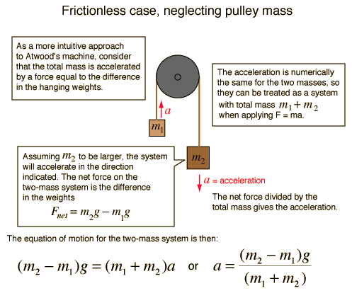

Atwood's MachineFurther discussionCalculation |
Index Newton's laws Standard mechanics problems |
| HyperPhysics***** Mechanics | Go Back |
Atwood's MachineBasic setupCalculation |
Index Newton's laws Standard mechanics problems |
| HyperPhysics***** Mechanics | Go Back |
Atwood's MachineApplication of Newton's second law to masses suspended over a pulley. |
Index Newton's laws Standard mechanics problems |
| HyperPhysics***** Mechanics | Go Back |